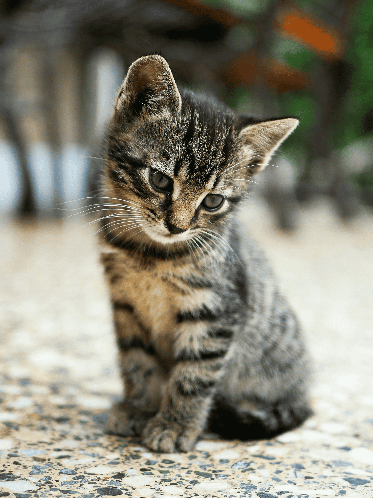

Voluntariado

Na Patapet Feliz cada gesto transforma vidas. Ser voluntário é ajudar com o coração, doar carinho, tempo e cuidar. Toda a ajuda é importante, desde divulgar até doações.
Quer fazer a diferença ? Doe amor e salve vidas!
Cadastre-se para ser voluntário
Como doar
Não pode estar presente ? Pode ajudar doando!
Cada contribuição mantém nossos resgates, vacinas, rações e o sonho de um lar.
Faça a sua doação via PIX:
Ajude AgoraChave PIX (E-mail): exemplo@exemplo.com